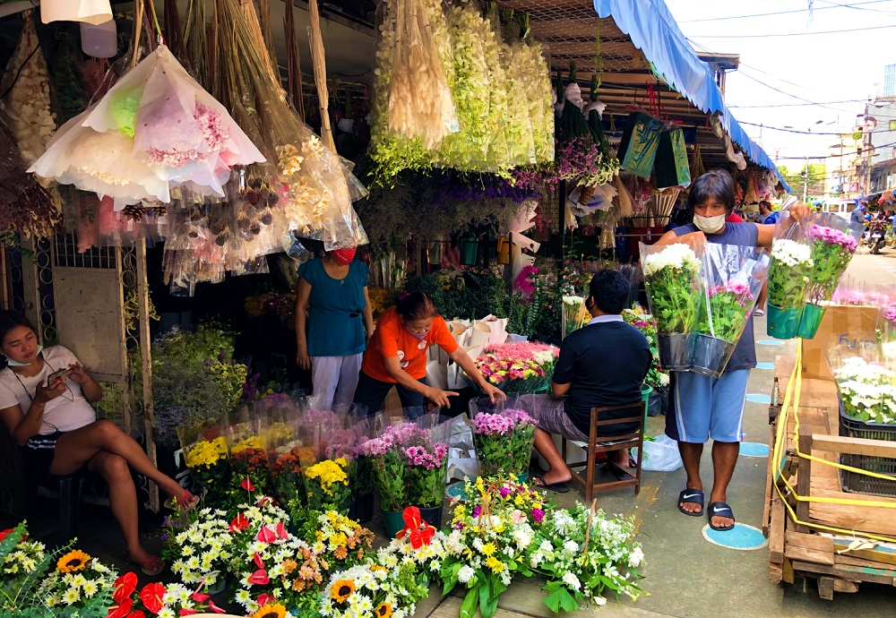

Dangwa is a famous flower market located in Manila, Philippines. It's known for its wide selection of fresh flowers sold at wholesale prices.
Vendors line the streets, offering blooms of all kinds—from roses and tulips to local orchids and sunflowers.
The market is most vibrant before holidays and celebrations when florists and locals crowd the area to buy beautiful arrangements.
You might think you'll score a deal a day after Valentine's or Mother's Day, but you'd be wrong. Filipinos have come to celebrate those two holidays week-long, meaning prices go up a few days before and even after the holiday. Demand stays the same for at least seven days, and so do high prices. Same goes for Undas, or the All Saints' Day and All Souls' Day holidays in early November.